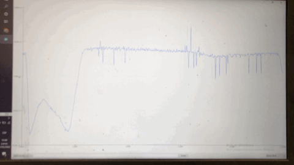

PHOTORESISTOR
A WEARABLE PIN :)
As I explain before, for this circuit I´m using as an INPUT a photoresistor. This sensor measure the amount of light between the values from 0 to 4095 and it´s an analog sensor which was declared in the arduino code.
PHOTO OF THE READING OF THE SERIAL MONITOR 
After the reading we defined a threshold to know when to turn on and off the led in the circuit.